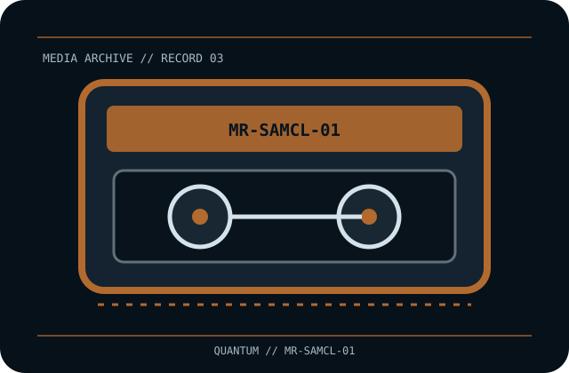

[ REMOVABLE MEDIA // MAGNETIC TAPE ]
Quantum Super DLTtape I Cartridge (MR-SAMCL-01)
Super DLTtape I (SDLT-1), single-reel half-inch magnetic data cartridge. This record identifies the media only; drive, host interface, firmware, software and any enclosure are separate.

EXACT SKU: Quantum MR-SAMCL-01. The record distinguishes nominal uncompressed capacity from any compressed estimate and documents generation-specific host compatibility.
Format generation, capacity and compatible drives
| Manufacturer / exact SKU | Quantum MR-SAMCL-01 |
|---|---|
| Format / generation | Super DLTtape I (SDLT-1), single-reel half-inch magnetic data cartridge. |
| Native capacity | 110 GB native in SDLT 220 drives; 160 GB native in SDLT 320 drives. Capacity depends on the compatible drive generation. |
| Compressed capacity | Up to 220 GB in SDLT 220 and 320 GB in SDLT 320 at the nominal 2:1 assumption; actual results depend on data and drive. |
| Compatible drive generations | SDLT 220 and SDLT 320 drives support Super DLTtape I media; SDLT 320 capacity is higher. Exact operation is drive/firmware-specific. DLTtape IV is a separate media generation even where an SDLT drive offers backward reading. |
| Interface and scope | The cartridge/disc has no direct host-computer interface. The compatible drive supplies its own SAS, Fibre Channel, SCSI, USB or other host connection; check the exact drive specification and driver/software chain. |
| Compatibility caveat | Do not confuse the cartridge’s two drive-dependent capacity ratings or the compressed estimates with native capacity. The SDLT 220/320 media support statement does not make this tape interchangeable with DLTtape IV or later DLT formats. |
Tape handling and preservation
Store in its protective case, in a clean, cool and dry environment. Avoid strong magnetic fields, dust, smoke, liquid, impact and temperature swings. Handle only the cartridge shell and follow the drive manual’s acclimation, cleaning and storage guidance; preserve data through verified independent copies and restore tests.
- Document the exact printed model, serial/batch or date code, write-protect/WORM status and source of the medium.
- For valuable data, keep at least two independently verified copies, record checksums, test restoration and plan migration before compatible hardware becomes unavailable.
Model-specific preservation and compatibility notes
Preservation note: magnetic tape is a format-dependent, obsolescence-prone medium. Keep a verified reader path and independent copies.
Do not confuse the cartridge’s two drive-dependent capacity ratings or the compressed estimates with native capacity. The SDLT 220/320 media support statement does not make this tape interchangeable with DLTtape IV or later DLT formats. Never infer interoperability from a similar cartridge shell, connector, brand or family name; confirm drive-generation support in the exact manufacturer's manual.
Manufacturer and archival references
- Quantum — media compatibility guidesManufacturer compatibility resource; select the exact SDLT drive model.
- Quantum SDLT 320 product guide (archival PDF copy)Drive-generation guide covering Super DLTtape I and backward media behavior.
- MR-SAMCL-01 Super DLTtape I product referenceExact media SKU and capacity-by-drive listing.
Capacity, compatibility and handling are specific to this model and its supported drive generation. For legacy equipment, preserve the manual and test an end-to-end read before relying on the cartridge for migration.